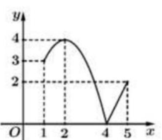
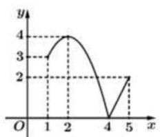
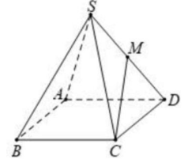
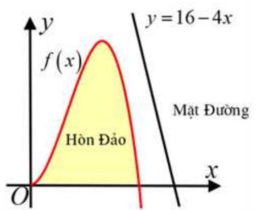

ĐỀ SỐ 65 - KHÓA HỌC TOÁN THẦY BÌNH
Phần I: Trắc nghiệm nhiều lựa chọn (Câu 1 - 12)
Tóm tắt kiến thức
Tính chất cơ bản của tích phân: \(\int_a^b k f(x) \, dx = k \int_a^b f(x) \, dx\), với \(k\) là hằng số.
Câu 1:
Nếu \(\int_1^3 f(x) \, dx = 5\) thì \(\int_1^3 2 f(x) \, dx\) bằng:
- A. \(\frac{5}{2}\)
- B. 7
- C. 4
- D. 10
Tóm tắt kiến thức
Công thức số hạng tổng quát của cấp số nhân: \(u_n = u_1 \cdot q^{n-1}\), với \(u_1\) là số hạng đầu, \(q\) là công bội.
Câu 2:
Cho cấp số nhân \((u_n)\) với \(u_1 = 3\) và công bội \(q = -2\). Giá trị của \(u_4\) bằng:
- A. 12
- B. 24
- C. -24
- D. -12
Tóm tắt kiến thức
Thể tích khối hộp: \(V = B \cdot h\), với \(B\) là diện tích đáy, \(h\) là chiều cao.
Câu 3:
Cho khối hộp có diện tích đáy là \(B\) và chiều cao là \(3h\). Thể tích \(V\) của khối hộp đã cho là:
- A. \(V = \frac{1}{3} B h\)
- B. \(V = B h\)
- C. \(V = 3 B h\)
- D. \(V = \frac{1}{6} B h\)
Tóm tắt kiến thức
Giá trị lớn nhất của hàm số liên tục trên đoạn được xác định bằng cách quan sát đồ thị hoặc tìm điểm cực trị.
Câu 4:
Cho hàm số \(y = f(x)\) liên tục trên đoạn \([1;5]\) và có đồ thị như hình vẽ sau:

Trên đoạn \([1;5]\), hàm số đã cho đạt giá trị lớn nhất tại điểm:
- A. \(x = 4\)
- B. \(x = 1\)
- C. \(x = 2\)
- D. \(x = 5\)
Tóm tắt kiến thức
Giá trị cực tiểu của hàm số trên đoạn được xác định bằng cách quan sát đồ thị hoặc tìm điểm cực trị.
Câu 5:
Cho hàm số \(y = f(x)\) liên tục trên đoạn \([1;5]\) và có đồ thị như hình vẽ sau:

Giá trị cực tiểu của hàm số \(y = f(x)\) trên đoạn \([1;5]\) là:
- A. \(y_{CT} = 3\)
- B. \(y_{CT} = 4\)
- C. \(y_{CT} = 2\)
- D. \(y_{CT} = 0\)
Tóm tắt kiến thức
Điểm đối xứng qua gốc tọa độ: Nếu \(M(x_M; y_M; z_M)\), thì điểm đối xứng \(M'(x_{M'}; y_{M'}; z_{M'})\) qua gốc \(O\) có tọa độ \(x_{M'} = -x_M\), \(y_{M'} = -y_M\), \(z_{M'} = -z_M\).
Câu 6:
Trong không gian \(Oxyz\), điểm \(M'\) đối xứng với điểm \(M(2;3;-4)\) qua gốc tọa độ \(O\) có tọa độ là:
- A. \(M'(-2;-3;-4)\)
- B. \(M'(-2;-3;4)\)
- C. \(M'(-2;3;-4)\)
- D. \(M'(2;3;4)\)
Tóm tắt kiến thức
Tập xác định của hàm số được xác định dựa trên điều kiện các biểu thức trong hàm có nghĩa.
Câu 7:
Hàm số nào dưới đây có tập xác định là \(\mathbb{R}\)?
- A. \(y = 2^x\)
- B. \(y = \frac{1}{e^x}\)
- C. \(y = \ln |x|\)
- D. \(y = 2^{\sqrt{x}}\)
Tóm tắt kiến thức
Tích phân của hàm số lượng giác: \(\int \frac{1}{\cos^2 x} \, dx = \tan x + C\).
Câu 8:
Cho hàm số \(f(x) = 1 - \frac{1}{\cos^2 x}\). Khẳng định nào sau đây đúng?
- A. \(\int f(x) \, dx = x + \tan x + C\)
- B. \(\int f(x) \, dx = x - \tan x + C\)
- C. \(\int f(x) \, dx = x + \cot x + C\)
- D. \(\int f(x) \, dx = x - \cot x + C\)
Tóm tắt kiến thức
Thống kê: Tổng số phần tử trong các khoảng có giá trị nhỏ hơn một ngưỡng nhất định được tính bằng tổng tần số của các khoảng đó.
Câu 9:
Thống kê số phút học bài ở nhà buổi tối của 100 học sinh, ta có bảng phân bố tần số ghép nhóm như sau:
| Số phút | \([30;60)\) | \([60;90)\) | \([90;120)\) | \([120;150)\) |
|---|---|---|---|---|
| Số học sinh | 18 | 15 | 42 | 25 |
Số học sinh học bài ở nhà buổi tối ít hơn 120 phút là:
- A. 42 học sinh
- B. 33 học sinh
- C. 75 học sinh
- D. 57 học sinh
Tóm tắt kiến thức
Phương trình tham số đường thẳng qua điểm \(A(x_0; y_0; z_0)\) với vector chỉ phương \(\vec{v} = (a; b; c)\): \(\left\{\begin{array}{l}x = x_0 + at \\ y = y_0 + bt \\ z = z_0 + ct\end{array}\right.\).
Câu 10:
Trong không gian \(Oxyz\), đường thẳng đi qua hai điểm \(P(1;-1;2)\) và \(Q(2;0;1)\) có phương trình tham số là:
- A. \(\left\{\begin{array}{l}x = 2 + t \\ y = t \\ z = 1 - t\end{array}\right.\)
- B. \(\left\{\begin{array}{l}x = 1 + t \\ y = -1 + t \\ z = 2 + t\end{array}\right.\)
- C. \(\left\{\begin{array}{l}x = 2 - t \\ y = t \\ z = 1 + t\end{array}\right.\)
- D. \(\left\{\begin{array}{l}x = 1 + t \\ y = -1 - t \\ z = 2 + t\end{array}\right.\)
Tóm tắt kiến thức
Tính chất logarithm: \(\log_b (x/y) = \log_b x - \log_b y\), và \(\log_{b^2} x = \frac{1}{2} \log_b x\).
Câu 11:
Cho \(a, b\) là các số thực dương thỏa mãn \(\log_5 \frac{a}{b} = \log_{25} a^4\). Khẳng định nào sau đây đúng?
- A. \(a = b\)
- B. \(a^2 b = 1\)
- C. \(a b^2 = 1\)
- D. \(a b = 1\)
Tóm tắt kiến thức
Tích vô hướng trong không gian: \(\vec{a} \cdot \vec{b} = |\vec{a}| |\vec{b}| \cos \theta\). Hình chóp tứ giác đều có các cạnh bằng nhau, góc giữa các vector được tính dựa trên hình học.
Câu 12:
Cho hình chóp tứ giác đều \(S.ABCD\) có tất cả các cạnh bằng 2. Gọi \(M\) là trung điểm \(SD\) (minh họa như hình bên). Giá trị của \(\overrightarrow{CM} \cdot \overrightarrow{BA}\) bằng:

- A. \(-\sqrt{3}\)
- B. -3
- C. 3
- D. \(\sqrt{3}\)
Phần II: Trắc nghiệm đúng/sai (Câu 13 - 16)
Tóm tắt kiến thức
Hình học không gian: Tâm đường tròn ngoại tiếp tam giác được xác định bằng giao điểm các đường trung trực.
Câu 13:
Cho tam giác \(ABC\). Gọi \(I\) là tâm đường tròn ngoại tiếp tam giác \(ABC\). Khi đó \(a + b + c = \frac{27}{11}\). Đúng hay Sai?
- Đúng
- Sai
Tóm tắt kiến thức
Xác suất: Công thức xác suất toàn phần \(P(A) = P(K)P(A|K) + P(\overline{K})P(A|\overline{K})\), công thức Bayes \(P(K|A) = \frac{P(K)P(A|K)}{P(A)}\).
Câu 14:
Hộp I có 5 bi trắng và 5 bi đen. Hộp II có 6 bi trắng và 4 bi đen. Bốc hai viên bi từ hộp I sang hộp II. Sau đó lấy ra ngẫu nhiên 1 viên bi từ hộp II. Gọi \(K\) là biến cố: "lấy bi ra từ hộp II của hộp I", \(A\) là biến cố: "lấy được bi trắng". Các khẳng định sau đúng hay sai?
a) Xác suất để lấy được bi ra từ hộp II của hộp I là \(\frac{1}{6}\).
b) Xác suất có điều kiện \(P(A|\overline{K}) = \frac{2}{5}\).
c) Xác suất để lấy được bi trắng là \(P(A) = \frac{5}{6}\).
d) Giả sử lấy được bi trắng từ hộp II. Xác suất để lấy được bi trắng của hộp I là \(\frac{1}{7}\).
- DSDS (Đúng, Sai, Đúng, Sai)
- DSSD (Đúng, Sai, Sai, Đúng)
- SDSS (Sai, Đúng, Sai, Sai)
- DSDS (Đúng, Sai, Đúng, Sai)
Tóm tắt kiến thức
Chuyển động chậm dần đều: \(v(t) = at + b\), quãng đường \(s(t) = \int v(t) \, dt\). Vận tốc trung bình: \(v_{tb} = \frac{s}{t}\).
Câu 15:
Một xe ô tô đang chạy với tốc độ 72 km/h thì người lái xe phát hiện chướng ngại vật cách 80 m. Người lái xe phản ứng sau 1 giây, đạp phanh khẩn cấp, ô tô chuyển động chậm dần đều với \(v(t) = at + b\) (m/s). Xe dừng cách chướng ngại vật 40 m. Các khẳng định sau đúng hay sai?
a) Quãng đường xe đi từ khi đạp phanh đến khi dừng là 40 m.
b) Giá trị của \(b\) là 20.
c) Thời gian từ lúc đạp phanh đến khi xe dừng là 3 giây.
d) Vận tốc trung bình từ lúc phát hiện chướng ngại vật đến khi dừng là 15,3 m/s (làm tròn đến hàng phần trăm).
- DSDS (Đúng, Sai, Đúng, Sai)
- DSSD (Đúng, Sai, Sai, Đúng)
- SDSS (Sai, Đúng, Sai, Sai)
- DSDS (Đúng, Sai, Đúng, Sai)
Tóm tắt kiến thức
Hình học phẳng: Diện tích hình chữ nhật nội tiếp tam giác, sử dụng lượng giác và đạo hàm để tìm cực trị.
Câu 16:
Cho hình chữ nhật \(MNPQ\) nội tiếp tam giác \(ABC\) vuông tại \(C\), với \(CB = 6\), \(CA = 8\). Các khẳng định sau đúng hay sai?
a) Độ dài cạnh huyền \(AB = 10\).
b) \(\sin A = \frac{x}{AN}\), \(\sin B = \frac{x}{BQ}\).
c) Diện tích hình chữ nhật \(MNPQ\) được xác định bởi \(S(x) = 10x - \frac{25}{12}x^2 (0 < x < 4,8)\).
d) Khi diện tích \(MNPQ\) đạt giá trị lớn nhất, diện tích tam giác \(ANP\) bằng \(\frac{54}{25}\).
- DSDS (Đúng, Sai, Đúng, Sai)
- DSSD (Đúng, Sai, Sai, Đúng)
- SDSS (Sai, Đúng, Sai, Sai)
- DSDS (Đúng, Sai, Đúng, Sai)
Phần III: Trắc nghiệm trả lời ngắn (Câu 17 - 22)
Tóm tắt kiến thức
Góc nhị diện trong hình chóp: Góc giữa hai mặt phẳng được xác định bằng góc giữa các đường thẳng trên hai mặt phẳng đó, vuông góc với giao tuyến.
Câu 17:
Cho hình chóp \(S.ABCD\) có đáy là hình vuông, \(BD = 2a\), cạnh bên \(SA\) vuông góc với mặt phẳng đáy và \(SA = a\). Số đo của góc nhị diện \([S, BD, C]\) bằng bao nhiêu độ?
Tóm tắt kiến thức
Trong giải đấu vòng tròn, mỗi trận thắng được 3 điểm, hòa được 1 điểm mỗi đội, thua được 0 điểm.
Câu 18:
Tổng số điểm vòng bảng của 4 đội trong một giải đấu bóng đá bằng 16. Biết rằng mỗi đội thi đấu vòng tròn 1 lượt, vậy có bao nhiêu trận hòa?
Tóm tắt kiến thức
Xác suất: Nếu xác suất tỉ lệ nghịch với khoảng cách, thì tích xác suất và khoảng cách là hằng số.
Câu 19:
Một người đi săn, xác suất bắn trúng thú tỉ lệ nghịch với khoảng cách bắn. Ở lần bắn đầu tại 20 m, xác suất trúng là 50%. Nếu trượt, bắn lần hai tại 30 m. Nếu trượt tiếp, bắn lần ba tại 50 m. Xác suất để trúng ở lần thứ ba, biết rằng đã trúng, là bao nhiêu phần trăm? (Làm tròn đến hàng phần trăm).
Tóm tắt kiến thức
Hình học không gian: Tâm đường tròn ngoại tiếp tam giác tiếp xúc với mặt cầu được xác định dựa trên tỉ lệ hình học.
Câu 20:
Trong không gian, cho mặt cầu \((S): (x-1)^2 + (y+1)^2 + (z-2)^2 = 9\) và điểm \(M(1;3;-1)\). Từ \(M\) kẻ các tiếp tuyến \(MA, MB, MC\) với mặt cầu \((S)\). Tâm của đường tròn ngoại tiếp tam giác \(ABC\) là điểm \(I(a;b;c)\). Giá trị của \(a + b + 3c\) bằng bao nhiêu?
Tóm tắt kiến thức
Tích phân xác định: Diện tích hình phẳng giới hạn bởi các đường cong được tính bằng tích phân.
Câu 21:
Trên hệ tọa độ \(Oxy\), một vườn hoa có dạng parabol \((P_1): y = -x^2 + 4\) cắt trục hoành tại \(A, B\) và đường thẳng \(d: y = a (0 < a < 4)\). Parabol \((P_2)\) đi qua \(A, B\) và có đỉnh thuộc \(y = a\). Hai phần tô đậm có diện tích bằng nhau. Đơn vị trên các trục là 10 m, phần tô đậm trồng hoa (200.000 đồng/m²), phần còn lại trồng cỏ (100.000 đồng/m²). Số tiền để trang trí vườn hoa là bao nhiêu triệu đồng? (Làm tròn đến phần mười).
Tóm tắt kiến thức
Khoảng cách từ điểm đến đường thẳng: \(d = \frac{|ax_0 + by_0 + c|}{\sqrt{a^2 + b^2}}\). Tìm cực trị bằng bảng biến thiên.
Câu 22:
Một hòn đảo có dạng một phần của đồ thị hàm số bậc ba \(f(x)\), đi qua điểm \((2;4)\) (đơn vị 100 m). Vị trí đất cầu tại \(A(t; -t^3 + 3t^2)\), đường bờ \(y = 16 - 4x\). Độ dài cây cầu ngắn nhất là bao nhiêu mét? (Làm tròn đến hàng phần mười).
